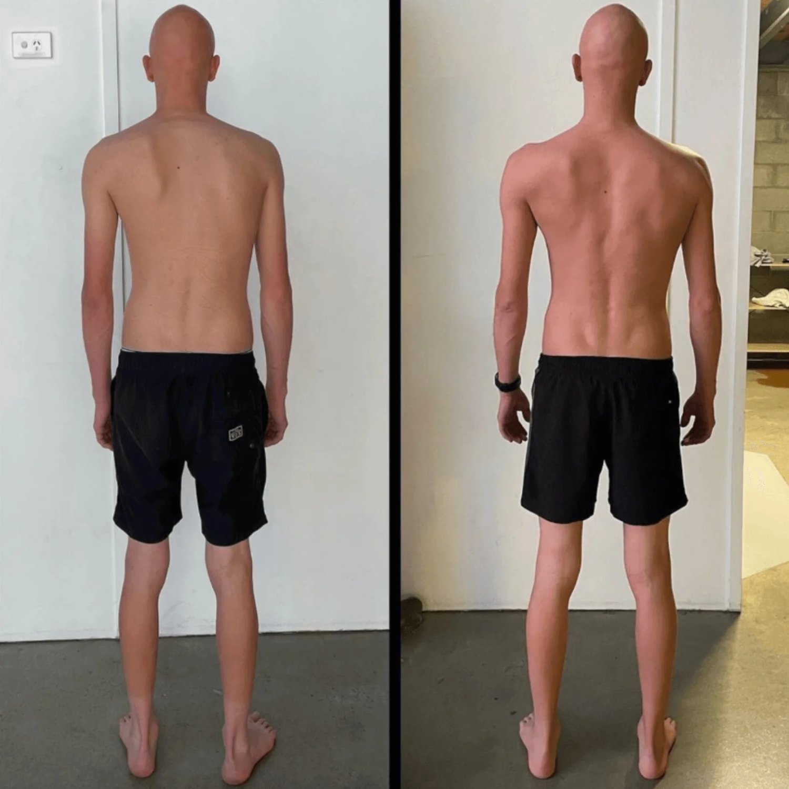
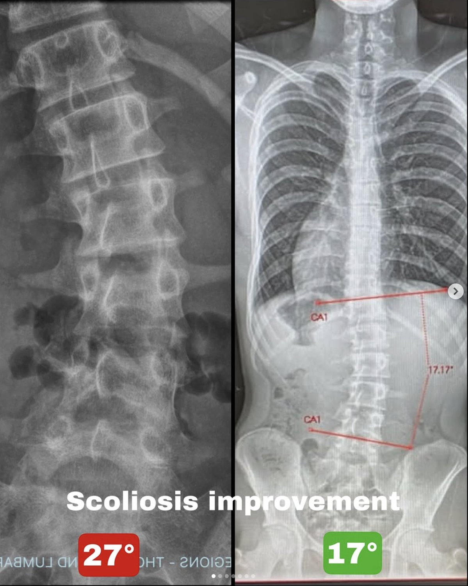

If you’ve been told to stretch one side, strengthen the other, or “just engage your core,” you’ve likely already realised something:
The curve doesn’t meaningfully change.
That’s because scoliosis is rarely just a structural issue of the spine. It is the result of how force, pressure, and movement are organised through the body over time.
At Functional Patterns Brisbane, we approach scoliosis correction differently. Rather than trying to manually fix the spine, we address the underlying mechanical drivers—particularly intra-abdominal pressure and gait mechanics—that shape spinal position in the first place.
What Is Scoliosis, Really?
Scoliosis is commonly defined as a lateral curvature of the spine. However, this definition is incomplete.
In practice, scoliosis is a three-dimensional adaptation involving:
-
Side bending
-
Rotation
-
Uneven compression through the ribcage and pelvis
More importantly, it reflects a pattern that has been reinforced over thousands of steps, breaths, and weight shifts.
For many clients we see across Brisbane, scoliosis is not something that appeared suddenly—it is something the body has gradually organised around.
How Scoliosis Actually Feels (Beyond the Diagnosis)
Most people don’t experience scoliosis as a “curve.” They experience it as asymmetry.
Common sensations include:
-
A persistent feeling of compression on one side of the ribs
-
Difficulty expanding air into one side of the torso
-
One hip consistently taking more load during standing or walking
-
A subtle but constant shift into one leg
-
Posture that feels like it “collapses” when not consciously held
These experiences point to something deeper than muscle tightness.
They indicate that the body is managing internal pressure unevenly.
Intra-Abdominal Pressure: The Missing Piece in Scoliosis
The human torso functions as a pressure system, not just a skeletal structure.
Intra-abdominal pressure (IAP) is created through the coordinated function of:
-
The diaphragm
-
The pelvic floor
-
The abdominal wall
-
The ribcage
When this system is functioning well, pressure is distributed evenly in all directions. This provides internal support to the spine and allows for efficient, balanced movement.
However, when this coordination breaks down, pressure does not disappear—it redistributes.
In most cases, it shifts toward one side of the body due to a combination of ribcage flare, pelvic rotation, and asymmetrical breathing patterns. Over time, this creates uneven loading through the spine, which the body adapts to by rotating and bending.
This adaptation is what we recognise as scoliosis.

A Common Pattern We See in Brisbane Clients
A frequent presentation involves:
-
A flared ribcage on one side (often the right)
-
Compression through the opposite ribcage
-
A rotated pelvis beneath this structure
-
A habitual shift of weight into one leg
In this configuration, the individual often cannot expand air effectively into one side of the torso. That side becomes progressively more compressed and restricted, while the opposite side may appear more open but lacks control.
Over time, this imbalance in pressure and movement drives rotational forces through the spine. The spine adapts accordingly, reinforcing the pattern.
Why Conventional Scoliosis Treatments Fall Short
Many traditional approaches attempt to directly influence the spine through stretching, strengthening, or bracing. While these can provide temporary changes in sensation, they often fail to produce lasting structural change.
Stretching the “tight” side does not address why that side is compressed in the first place. Without altering pressure distribution, the body will return to the same position.
Strengthening the “weak” side can reinforce asymmetry if the underlying alignment and pressure mechanics are not corrected.
Even general “core engagement” can be counterproductive if the ribcage and pelvis are not positioned in a way that allows the diaphragm to function effectively. In these cases, individuals often brace rather than create functional, adaptable pressure.
In all scenarios, the root issue remains unchanged: how force is being distributed through the body.
The Functional Patterns Approach to Scoliosis Correction
At Functional Patterns Brisbane, scoliosis is addressed as a systems problem.
Rather than focusing on the spine in isolation, we work to change the conditions that are shaping it.

1. Structural Repositioning
We begin by aligning the body from the ground up:
-
Feet and weight distribution
-
Knee tracking
-
Pelvic orientation
-
Ribcage positioning
-
Head and neck alignment
Without this foundation, it is not possible to distribute pressure evenly.
2. Restoring Intra-Abdominal Pressure
We then retrain how pressure is created and managed within the body.
This includes:
-
Coordinating breathing mechanics with posture
-
Expanding the ribcage in multiple directions (front, sides, and back)
-
Integrating the pelvic floor and abdominal wall into this system
Clients often notice that areas which previously felt “blocked” begin to open without stretching, simply because pressure is now able to move into those regions.
3. Integration Into Gait and Movement
Scoliosis is not reinforced while lying still—it is reinforced through movement, particularly walking.
Every step is an opportunity to either reinforce asymmetry or restore balance.
We therefore integrate changes into:
-
Gait mechanics
-
Rotational movement patterns
-
Load transfer through the body
This ensures that improvements are not temporary, but are repeated and reinforced thousands of times per day.
Why This Approach Produces Change
The spine does not exist in isolation. It responds to the forces acting upon it.
When pressure is distributed more evenly, and movement patterns become more balanced, the environment surrounding the spine changes. Over time, the spine adapts to this new environment.
This is why the goal is not to forcibly “straighten” the spine, but to change the inputs that shape it.

What Results Can You Expect?
Structural change is a gradual process and depends on consistency and the degree of adaptation already present.
However, when intra-abdominal pressure, alignment, and gait are addressed together, many clients experience:
-
Reduced pain through the back, ribs, and hips
-
Improved breathing capacity
-
Greater postural symmetry
-
A reduction in the visual prominence of spinal curvature over time
For many people, this is the first time their approach has addressed the cause rather than the symptoms.
Scoliosis Is an Adaptation, Not a Random Defect
Scoliosis reflects how the body has organised itself under repeated constraints:
-
Asymmetrical pressure
-
Repetitive movement patterns
-
Uneven load distribution
When those constraints change, the system reorganises.
Book a Scoliosis Assessment in Brisbane
If you are dealing with scoliosis, persistent asymmetry, or postural imbalance, the first step is understanding how your body is currently managing pressure and movement.
At Functional Patterns Brisbane, we provide a comprehensive assessment to identify:
-
Where pressure is being lost or shifted
-
How your movement patterns are reinforcing asymmetry
-
What specific changes are required to restore balance
From there, a structured plan can be implemented to progressively correct these patterns.
Frequently Asked Questions
Can scoliosis be corrected without surgery?
In many cases, structural changes can occur when the underlying drivers—pressure and movement—are addressed. The extent of change depends on the individual, but improvements in function and symmetry are common.
Is scoliosis genetic?
There may be genetic predispositions, but expression is heavily influenced by mechanical and environmental factors, including how you breathe, stand, and move.
How long does it take to see changes?
Most people begin to notice changes in how they feel (breathing, tension, posture) within weeks. Structural changes occur over longer timeframes with consistent input.